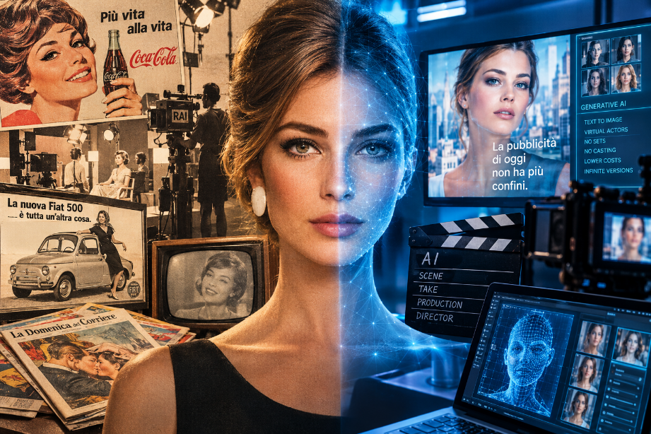

ATTUALITÀ
Quando l'attore diventa un algoritmo
Dal Carosello di Raffaella Carrà all'intelligenza artificiale che genera spot da sola: cosa resta, oggi, di un attore in carne e ossa. Con un'intervista a Gloria Anselmi.

Dal Carosello di Raffaella Carrà all'intelligenza artificiale che genera spot da sola: cosa resta, oggi, di un attore in carne e ossa. Con un'intervista a Gloria Anselmi.